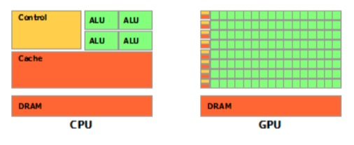
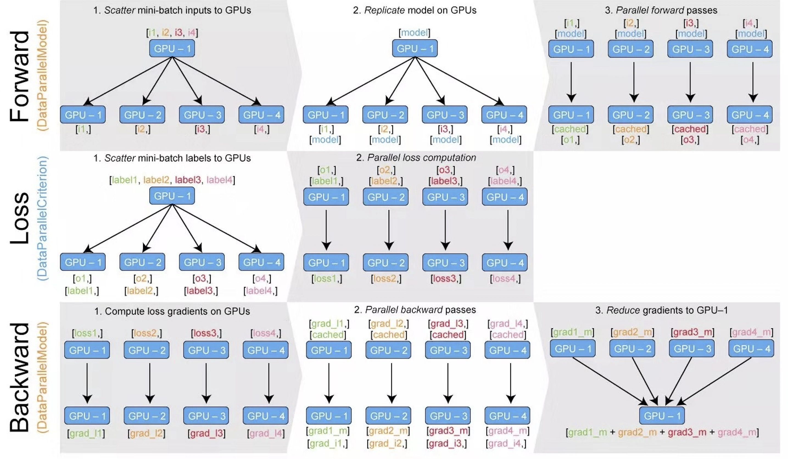

7.3 GPU使用
深度学习之所以可以发展迅猛，得益于强大的计算力。在PyTorch中，自然加持GPU加速运算，本节将介绍PyTorch中GPU的使用原理与多GPU使用的DataParallel原理，还有一些针对GPU的实用代码段。
gpu与cpu
在处理器家族中，有两大阵营，分别是CPU和GPU，它们分工协作，共同完成计算机复杂功能。
但它们两者主要差别在哪里？下面一探究竟。
CPU(central processing unit, 中央处理器)cpu主要包括两个部分，即控制器、运算器，除此之外还包括高速缓存等
GPU(Graphics Processing Unit, 图形处理器)是为处理类型统一并且相互无依赖的大规模数据运算，以及不需要被打断的纯净的计算环境为设计的处理器，因早期仅有图形图像任务中设计大规模统一无依赖的运算，因此该处理器称为图像处理器，俗称显卡。
那么它们之间主要区别在哪里呢，来看一张示意图

绿色的是计算单元，橙红色的是存储单元，橙黄色的是控制单元，从示意图中看出，gpu的重点在计算，cpu的重点在控制，这就是两者之间的主要差异。
在pytorch中，可以将训练数据以及模型参数迁移到gpu上，这样就可以加速模型的运算
在这里，需要了解的是，在pytorch中，两个数据运算必须在同一个设备上。
PyTorch的设备——torch.device
前面提到，PyTorch的运算需要将运算数据放到同一个设备上，因此，需要了解PyTorch中设备有哪些？
目前，PyTorch支持两种设备，cpu与cuda，为什么是cuda而不是gpu？因为早期，只有Nvidia的GPU能用于模型训练加速，因此称之为cuda。
即使现在支持了AMD显卡进行加速，仍旧使用cuda来代替gpu。
PyTorch中表示设备通常用torch.device)这个函数进行设置，例如:
>>> torch.device('cuda:0')
device(type='cuda', index=0)
>>> torch.device('cpu')
device(type='cpu')
>>> torch.device('cuda') # current cuda device
device(type='cuda')
补充资料：
把数据放到GPU——to函数
在pytorch中，只需要将要进行运算的数据放到gpu上，即可使用gpu加速运算
在模型运算过程中，需要放到GPU的主要是两个：
输入数据——形式为tensor
网络模型——形式为module
pytorch中针对这两种数据都有相应的函数把它们放到gpu上，我们来认识一下这个函数，就是to函数
tensor的to函数: to(*args, \kwargs) → Tensor**
功能：转换张量的数据类型或者设备
注意事项：to函数不是inplace操作，所以需要重新赋值，这与module的to函数不同
使用：
- 转换数据类型
x = torch.ones((3, 3))
x = x.to(torch.float64)
- 转换设备
x = torch.ones((3, 3))
x = x.to("cuda")
module的to函数：to(*args, \kwargs)**
功能：move and/or cast the parameters and buffers，转换模型中的参数和缓存
注意事项：实行的是inplace操作
使用：
- 转换数据类型
linear = nn.Linear(2, 2)
print(linear.weight)
linear.to(torch.double)
print(linear.weight)
- 迁移至gpu
gpu1 = torch.device("cuda:1")
linear.to(gpu1)
print(linear.weight)
将torch.device 与 to函数联合使用，就是第六章混淆矩阵代码中使用过的方式
device = torch.device("cuda" if torch.cuda.is_available() else "cpu")
model.to(device)
inputs, labels = inputs.to(device), labels.to(device)
通常，会采用torch.cuda.is_available()函数来自适应当前设备，若没有gpu可用，自动设置device为cpu，不会影响代码的运行。
除了torch.cuda.is_available()，torch库中还有一些关于cuda的实用函数，下面一起看看。
torch.cuda
在torch.cuda中有几十个关于guda的函数，详细请查阅官方文档)
下面介绍几个常用的函数。
torch.cuda.device_count()： 查看可用GPU数量
torch.cuda.current_device()：查看当前使用的设备的序号
torch.cuda.get_device_name()：获取设备的名称
torch.cuda.get_device_capability(device=None)：查看设备的计算力
torch.cuda.is_available()：查看cuda是否可用
torch.cuda.get_device_properties()：查看GPU属性
torch.cuda.set_device(device)：设置可用设备，已不推荐使用，建议通过CUDA_VISIBLE_DEVICES来设置，下文会讲解CUDA_VISIBLE_DEVICES的使用。
torch.cuda.mem_get_info(device=None)：查询gpu空余显存以及总显存。
torch.cuda.memory_summary(device=None, abbreviated=False)：类似模型的summary，它将GPU的详细信息进行输出。
torch.cuda.empty_cache()：清空缓存，释放显存碎片。
- torch.backends.cudnn.benchmark = True : 提升运行效率，仅适用于输入数据较固定的，如卷积
会让程序在开始时花费一点额外时间，为整个网络的每个卷积层搜索最适合它的卷积实现算法，进而实现网络的加速让内置的 cuDNN 的 auto-tuner 自动寻找最适合当前配置的高效算法，来达到优化运行效率的问题
- torch.backends.cudnn.deterministic: 用以保证实验的可重复性.
由于cnDNN 每次都会去寻找一遍最优配置，会产生随机性，为了模型可复现，可设置torch.backends.cudnn.deterministic = True
运行代码，可看到如下信息：
device_count: 1
current_device: 0
(8, 6)
NVIDIA GeForce RTX 3060 Laptop GPU
True
['sm_37', 'sm_50', 'sm_60', 'sm_61', 'sm_70', 'sm_75', 'sm_80', 'sm_86', 'compute_37']
_CudaDeviceProperties(name='NVIDIA GeForce RTX 3060 Laptop GPU', major=8, minor=6, total_memory=6144MB, multi_processor_count=30)
(5407899648, 6442450944)
|===========================================================================|
| PyTorch CUDA memory summary, device ID 0 |
|---------------------------------------------------------------------------|
| CUDA OOMs: 0 | cudaMalloc retries: 0 |
|===========================================================================|
| Metric | Cur Usage | Peak Usage | Tot Alloc | Tot Freed |
|---------------------------------------------------------------------------|
| Allocated memory | 0 B | 0 B | 0 B | 0 B |
| from large pool | 0 B | 0 B | 0 B | 0 B |
| from small pool | 0 B | 0 B | 0 B | 0 B |
|---------------------------------------------------------------------------|
| Active memory | 0 B | 0 B | 0 B | 0 B |
| from large pool | 0 B | 0 B | 0 B | 0 B |
| from small pool | 0 B | 0 B | 0 B | 0 B |
|---------------------------------------------------------------------------|
| GPU reserved memory | 0 B | 0 B | 0 B | 0 B |
| from large pool | 0 B | 0 B | 0 B | 0 B |
| from small pool | 0 B | 0 B | 0 B | 0 B |
|---------------------------------------------------------------------------|
| Non-releasable memory | 0 B | 0 B | 0 B | 0 B |
| from large pool | 0 B | 0 B | 0 B | 0 B |
| from small pool | 0 B | 0 B | 0 B | 0 B |
|---------------------------------------------------------------------------|
| Allocations | 0 | 0 | 0 | 0 |
| from large pool | 0 | 0 | 0 | 0 |
| from small pool | 0 | 0 | 0 | 0 |
|---------------------------------------------------------------------------|
| Active allocs | 0 | 0 | 0 | 0 |
| from large pool | 0 | 0 | 0 | 0 |
| from small pool | 0 | 0 | 0 | 0 |
|---------------------------------------------------------------------------|
| GPU reserved segments | 0 | 0 | 0 | 0 |
| from large pool | 0 | 0 | 0 | 0 |
| from small pool | 0 | 0 | 0 | 0 |
|---------------------------------------------------------------------------|
| Non-releasable allocs | 0 | 0 | 0 | 0 |
| from large pool | 0 | 0 | 0 | 0 |
| from small pool | 0 | 0 | 0 | 0 |
|---------------------------------------------------------------------------|
| Oversize allocations | 0 | 0 | 0 | 0 |
|---------------------------------------------------------------------------|
| Oversize GPU segments | 0 | 0 | 0 | 0 |
|===========================================================================|
None
多gpu训练——nn.DataParallel
人多力量大的道理在PyTorch的训练中也是适用的，PyTorch支持多个GPU共同训练，加快训练速度。
多GPU可分为单机多卡和多机多卡，这里仅介绍单机多卡的方式。
单机多卡的实现非常简单，只需要增加一行代码：
net = nn.DataParallel(net)
代码的意思是将一个nn.Module变为一个特殊的nn.Module，这个Module的forward函数实现多GPU调用。
如果对nn.Module的概念以及forward函数不理解的话，请回到第四章进行学习。
首先看一幅示意图，理解多GPU是如何工作的

整体有四个步骤：
- 数据平均划为N份
- 模型参数复制N份
- 在N个GPU上同时运算
- 回收N个GPU上的运算结果
了解了多gpu运行机制，下面看看DataParallel是如何实现的。
torch.nn.DataParallel(module, device_ids=None, output_device=None, dim=0)
功能：实现模型的数据并行运算
主要参数：
module - 需要并行的module
device_ids: (list of python:int or torch.device) – CUDA devices (default: all devices), eg: [2, 3]
默认采用所有可见gpu，这里强调了可见gpu，就是说可以设置部分gpu对当前python脚本不可见，这个可以通过系统环境变量设置
output_device: int or torch.device , 设置输出结果所在设备，默认为 device_ids[0]，通常以第1个逻辑gpu为主gpu
源代码分析：
DataParallel仍旧是一个nn.Module类，所以首要关注它的forward函数。
来到/torch/nn/parallel/data_parallel.py的147行：
def forward(self, *inputs, **kwargs):
with torch.autograd.profiler.record_function("DataParallel.forward"):
if not self.device_ids:
return self.module(*inputs, **kwargs)
for t in chain(self.module.parameters(), self.module.buffers()):
if t.device != self.src_device_obj:
raise RuntimeError("module must have its parameters and buffers "
"on device {} (device_ids[0]) but found one of "
"them on device: {}".format(self.src_device_obj, t.device))
inputs, kwargs = self.scatter(inputs, kwargs, self.device_ids)
# for forward function without any inputs, empty list and dict will be created
# so the module can be executed on one device which is the first one in device_ids
if not inputs and not kwargs:
inputs = ((),)
kwargs = ({},)
if len(self.device_ids) == 1:
return self.module(*inputs[0], **kwargs[0])
replicas = self.replicate(self.module, self.device_ids[:len(inputs)])
outputs = self.parallel_apply(replicas, inputs, kwargs)
return self.gather(outputs, self.output_device)
核心点有4行代码，分别是：
inputs, kwargs = self.scatter(inputs, kwargs, self.device_ids)
replicas = self.replicate(self.module, self.device_ids[:len(inputs)])
outputs = self.parallel_apply(replicas, inputs, kwargs)
return self.gather(outputs, self.output_device)
一、数据切分
inputs, kwargs = self.scatter(inputs, kwargs, self.device_ids)：利用scatter函数，将数据切分为多块，为各GPU需要的数据做准备。
scatter函数在torch\nn\parallel\scatter_gather.py第11行。
def scatter(inputs, target_gpus, dim=0):
r"""
Slices tensors into approximately equal chunks and
distributes them across given GPUs. Duplicates
references to objects that are not tensors.
"""
二、模型分发至GPU
replicas = self.replicate(self.module, self.device_ids[:len(inputs)])：利用replicate函数将模型复制N份，用于多GPU上。
replicate函数在 torch\nn\parallel\replicate.py第78行。
三、执行并行推理
outputs = self.parallel_apply(replicas, inputs, kwargs)：多GPU同时进行运算。
四、结果回收
return self.gather(outputs, self.output_device)
为了理解分发过程，请使用具备多GPU的环境，运行配套代码，可看到如下信息：
batch size in forward: 4
batch size in forward: 4
batch size in forward: 4
batch size in forward: 4
model outputs.size: torch.Size([16, 3])
CUDA_VISIBLE_DEVICES :0,1,3,2
device_count :4
batchsize设置为16，将16个样本平均分发给4个GPU，因此在forward函数当中，看到的数据是4个样本。
多GPU训练模型的保存与加载
当模型变为了Dataparallel时，其参数名称会多一个module.字段，这导致在保存的时候state_dict也会多了module.字段。
从而，在加载的时候经常出现以下报错。
RuntimeError: Error(s) in loading state_dict for FooNet:
Missing key(s) in state_dict: "linears.0.weight", "linears.1.weight", "linears.2.weight".
Unexpected key(s) in state_dict: "module.linears.0.weight", "module.linears.1.weight", "module.linears.2.weight".
解决方法是，移除key中的module.：
from collections import OrderedDict
new_state_dict = OrderedDict()
for k, v in state_dict_load.items():
namekey = k[7:] if k.startswith('module.') else k
new_state_dict[namekey] = v
请结合代码运行，观察其使用，并看到如下结果：
state_dict_load:
OrderedDict([('module.linears.0.weight', tensor([[ 0.3337, 0.0317, -0.1331],
[ 0.0431, 0.0454, 0.1235],
[ 0.0575, -0.2903, -0.2634]])), ('module.linears.1.weight', tensor([[ 0.1235, 0.1520, -0.1611],
[ 0.4511, -0.1460, -0.1098],
[ 0.0653, -0.5025, -0.1693]])), ('module.linears.2.weight', tensor([[ 0.3657, -0.1107, -0.2341],
[ 0.0657, -0.0194, -0.3119],
[-0.0477, -0.1008, 0.2462]]))])
new_state_dict:
OrderedDict([('linears.0.weight', tensor([[ 0.3337, 0.0317, -0.1331],
[ 0.0431, 0.0454, 0.1235],
[ 0.0575, -0.2903, -0.2634]])), ('linears.1.weight', tensor([[ 0.1235, 0.1520, -0.1611],
[ 0.4511, -0.1460, -0.1098],
[ 0.0653, -0.5025, -0.1693]])), ('linears.2.weight', tensor([[ 0.3657, -0.1107, -0.2341],
[ 0.0657, -0.0194, -0.3119],
[-0.0477, -0.1008, 0.2462]]))])
Process finished with exit code 0
使用指定编号的gpu
通常，一台服务器上有多个用户，或者是会进行多个任务，此时，对gpu合理的安排使用就尤为重要
在实践中，通常会设置当前python脚本可见的gpu，然后直接使用nn.dataparallel使用所有gpu即可，不需要手动去设置使用哪些gpu
设置python脚本可见gpu的方法为设置系统环境变量中的CUDA_VISIBLE_DEVICES
设置方法为：
os.environ.setdefault("CUDA_VISIBLE_DEVICES", "2, 3")
当时之后，即物理设备的2,3号GPU，在程序中分别是0号、1号GPU，这里需要理解逻辑编号与物理编号的对应关系。
注意事项： CUDA_VISIBLE_DEVICES的设置一定要在 device = torch.device("cuda" if torch.cuda.is_available() else "cpu") 之前！
否则已经调用cuda，python脚本已经获取当前可见gpu了，再设置就无效了